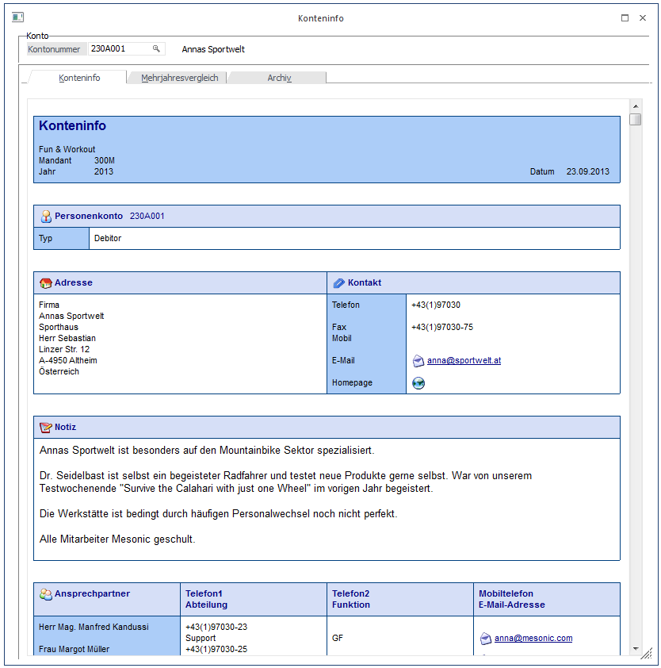
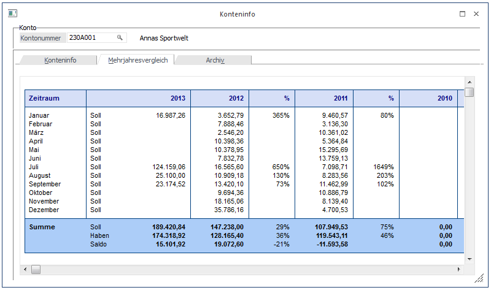
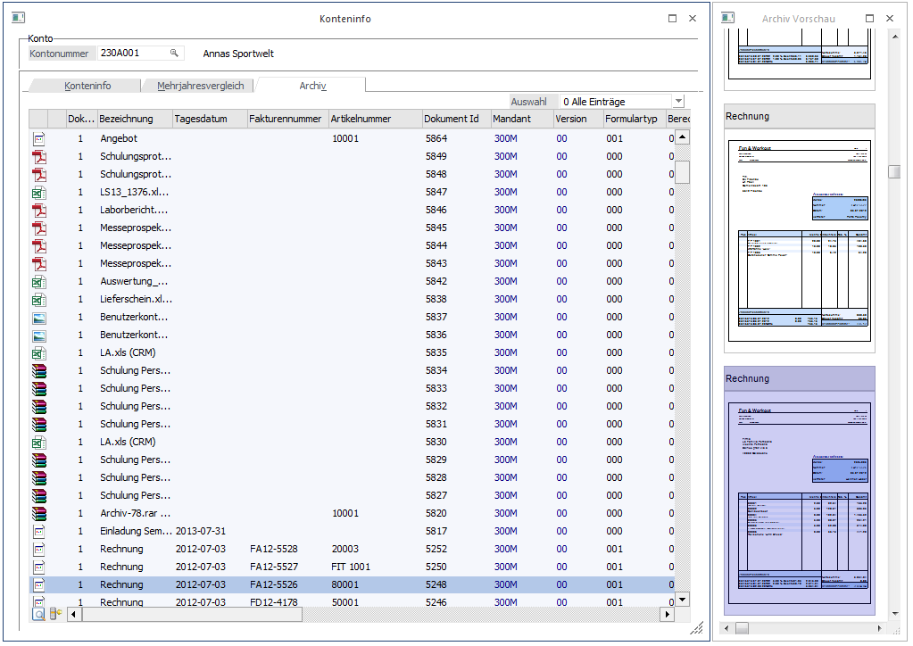
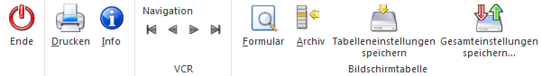

Die Konteninfo, die sowohl im Personenkonten- als auch im Sachkontenstamm durch Anwahl des INFO-Buttons, bzw. über das Kontextmenü im Dialog-Stapel Buchen oder in der Dialogbilanzierung aufgerufen werden kann, gibt einen Überblick über das gerade aufgerufene Konto.
Ebenfalls kann dieses Fenster über den eigenen Menüpunkt
1 Stammdaten
1 Konten
1 Konteninfo
in der Finanzbuchhaltung oder der Fakturierung aufgerufen werden.
Im Feld "Kontonummer" kann (bei Vorbelegung dieses Feldes durch das Öffnen aus dem Kontenstamm) jederzeit auch eine andere Kontonummer aufgerufen bzw. über den Matchcode (F9-Taste) gesucht werden.

Das Fenster ist in 3 Register unterteilt, wobei in jedem Register andere Informationen sichtbar sind:
Konteninfo
In diesem Bereich werden alle Stammdaten (z.B. bei Personenkonten: inkl. Ansprechpartner usw.) des Kontos, die Umsätze der einzelnen Monate, die Gesamtumsätze und eine Grafik der Umsätze angezeigt.
Durch Anklicken des ENDE-Buttons wird das Fenster geschlossen, durch Anklicken des Drucken-Buttons wird die Konteninformation ausgedruckt. Durch Anklicken des INFO-Buttons wird das Programm WinLine INFO gestartet, wo weitere Daten zu diesem Konto angezeigt werden.
Mehrjahresvergleich
Durch Anwahl des Registers "Mehrjahresvergleich" können neben den laufenden Umsatzzahlen auch die Umsatzzahlen der letzten Jahre (max. der letzten 5 Jahre), sowie deren Abweichungen angezeigt werden. Welche Werte hier angezeigt werden (Soll/Haben/Saldo) ist abhängig von der Einstellung in den "Mehrjahresvergleich - Optionen"; ebenso worauf sich die Prozentsätze der einzelnen Werte beziehen (siehe dazu auch den Menüpunkt "Mehrjahresvergleich - Optionen" im WinLine Start).

Hinweis
In dieser Ansichten werden für Hauptbuchkonten die Salden inkl. Nebenbuchkonten angezeigt.
Archiv
Durch Anwahl des Registers "Archiv" können alle Archiveinträge angesehen werden, die zu diesem Konto vorhanden sind. Voraussetzung dafür ist, dass das Programm WinLine ARCHIV eingesetzt wird. Über die Auswahllistbox
Ø Auswahl
kann der Umfang der Dokumente eingestellt werden, die angezeigt werden sollen. Dabei stehen folgende Optionen zur Verfügung:
ü 0 - Alle Einträge
ü 1 - das letzte Jahr
ü 2 - das letzte Halbjahr
ü 3 - das letzte Quartal
ü 4 - das letzte Monat
ü 5 - die letzte Woche
ü 6 - heute
Hinweis
In dieser Archivanzeige werden nur die Einträge des aktuellen Mandanten angezeigt. Wenn die Einträge von allen Mandanten angezeigt werden sollen, so muss über die Archivsuche ausgewertet werden.

Eine Vorschau der vorhandenen Archivdokumente erfolgt dabei in der sogenannten "Thumbnail-Ansicht" (im Dockingview-Fenster).
Buttons

Ø Ende
Durch Anklicken des ENDE-Buttons wird das Fenster geschlossen.
Ø Drucken
Durch Anklicken des Drucken-Buttons wird die Konteninformation ausgedruckt. Beim Druck des Mehrjahresvergleiches erfolgt der Druck in 2 Blöcken. Im ersten Block wird der aktuelle Mandant, der Zweite und Dritte ausgedruckt; im zweiten Block der Aktuelle, der vierte und fünfte Mandant sofern diese verwendet werden.
Ø Info
Durch Anklicken des INFO-Buttons wird das Programm WinLine INFO gestartet, wo weitere Daten zu diesem Konto angezeigt werden.
Ø VCR-Buttonleiste
Über die sogenannte VCR-Buttonleiste () kann durch Mausklick oder mit der Tastatur zwischen den Datensätzen geblättert werden:
ü  Damit kann der erste Datensatz angesprochen werden (Tastatur STRG + SHIFT +
POS1).
Damit kann der erste Datensatz angesprochen werden (Tastatur STRG + SHIFT +
POS1).
ü  Damit kann der vorherige Datensatz angesprochen werden (Tastatur SHIFT -
[numerischer Ziffernblock]).
Damit kann der vorherige Datensatz angesprochen werden (Tastatur SHIFT -
[numerischer Ziffernblock]).
ü  Damit kann der nächste Datensatz angesprochen werden (Tastatur SHIFT +
[numerischer Ziffernblock]).
Damit kann der nächste Datensatz angesprochen werden (Tastatur SHIFT +
[numerischer Ziffernblock]).
ü  Damit kann der letzte Datensatz angesprochen werden (Tastatur STRG + SHIFT +
ENDE)
Damit kann der letzte Datensatz angesprochen werden (Tastatur STRG + SHIFT +
ENDE)
Im Register Archiv gibt es zusätzliche Button, die spezielle Funktionen haben:
Ø Formular
Durch Anklicken des Formular-Buttons kann eine Vorschau der Archiv-Dokumente angesehen werden. Voraussetzung dafür ist, dass es sich dabei um einen WinLine Beleg oder um eine Grafik handelt.
Ø Archiv
Durch Anklicken des Archiv-Buttons wechselt das Programm in die Archiv-Suche und schlägt das aufgerufene Konto als Suchbegriff vor.
Ø Tabelleneinstellungen speichern
Die Spalten einer Tabelle können grundsätzlich an beliebige Positionen verschoben, bzw. in der Breite entsprechend angepasst werden. Durch Anwahl des Buttons "Tabelleneinstellungen speichern" werden die Einstellungen benutzerspezifisch gespeichert und bei dem nächsten Aufruf des Programmpunktes wieder vorgeschlagen.
Ø Gesamteinstellungen speichern
Im Gegensatz zu "Tabelleneinstellungen speichern" können mit "Gesamteinstellungen speichern" mehrere Tabellenaufbauten gespeichert und nach Wunsch geladen werden. Zusätzlich werden Sonderfunktionen der Tabelle (z.B. "Spalte gruppieren") ebenfalls bei der Speicherung bedacht.